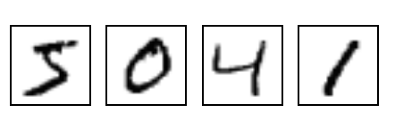

源码: tensorflow/g3doc/tutorials/mnist/
本教程的目标是展示如何下载用于手写数字分类问题所要用到的（经典）MNIST数据集。
本教程需要使用以下文件：
| 文件 | 目的 |
|---|---|
input_data.py |
下载用于训练和测试的MNIST数据集的源码 |
MNIST是在机器学习领域中的一个经典问题。该问题解决的是把28x28像素的灰度手写数字图片识别为相应的数字，其中数字的范围从0到9.

更多详情, 请参考 Yann LeCun's MNIST page 或 Chris Olah's visualizations of MNIST.
Yann LeCun's MNIST page 也提供了训练集与测试集数据的下载。
| 文件 | 内容 |
|---|---|
train-images-idx3-ubyte.gz |
训练集图片 - 55000 张 训练图片, 5000 张 验证图片 |
train-labels-idx1-ubyte.gz |
训练集图片对应的数字标签 |
t10k-images-idx3-ubyte.gz |
测试集图片 - 10000 张 图片 |
t10k-labels-idx1-ubyte.gz |
测试集图片对应的数字标签 |
在 input_data.py 文件中, maybe_download() 函数可以确保这些训练数据下载到本地文件夹中。
文件夹的名字在
fully_connected_feed.py 文件的顶部由一个标记变量指定，你可以根据自己的需要进行修改。
这些文件本身并没有使用标准的图片格式储存，并且需要使用input_data.py文件中extract_images() 和extract_labels()函数来手动解压（页面中有相关说明）。
图片数据将被解压成2维的tensor：[image index, pixel index]
其中每一项表示某一图片中特定像素的强度值, 范围从 [0, 255] 到 [-0.5, 0.5]。 "image index"代表数据集中图片的编号, 从0到数据集的上限值。"pixel index"代表该图片中像素点得个数, 从0到图片的像素上限值。
以train-*开头的文件中包括60000个样本，其中分割出55000个样本作为训练集，其余的5000个样本作为验证集。因为所有数据集中28x28像素的灰度图片的尺寸为784，所以训练集输出的tensor格式为[55000, 784]。
数字标签数据被解压称1维的tensor: [image index]，它定义了每个样本数值的类别分类。对于训练集的标签来说，这个数据规模就是:[55000]。
底层的源码将会执行下载、解压、重构图片和标签数据来组成以下的数据集对象:
| 数据集 | 目的 |
|---|---|
data_sets.train |
55000 组 图片和标签, 用于训练。 |
data_sets.validation |
5000 组 图片和标签, 用于迭代验证训练的准确性。 |
data_sets.test |
10000 组 图片和标签, 用于最终测试训练的准确性。 |
执行read_data_sets()函数将会返回一个DataSet实例，其中包含了以上三个数据集。函数DataSet.next_batch()是用于获取以batch_size为大小的一个元组，其中包含了一组图片和标签，该元组会被用于当前的TensorFlow运算会话中。
images_feed, labels_feed = data_set.next_batch(FLAGS.batch_size)
原文地址：MNIST Data Download 翻译：btpeter 校对：waiwaizheng